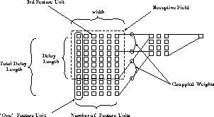

Next: Plane Editor
Up: BigNet for Time-Delay
Previous: BigNet for Time-Delay
The following naming conventions have been adopted for the BigNet
window. Their meaning may be clarified by figure  .
.
- Receptive Field: The cluster of units in a layer totally
connected to one row of units in the next layer.
- 1st feature unit: The starting row of the receptive field.
- width: The width of the receptive field.
- delay length: The number of significant delay steps of the
receptive field. Must be the same value for all receptive fields in
this layer.
- No. of feature units: The width of the current layer
- Total delay length: The length of the current layer. Total delay
length times the number of feature units equals the number of units in
this layer. Note that the total delay length must be the same as the
delay length plus the total delay length of the next layer minus one!
- z-coordinates of the plane: gives the placing of the plane in
space. This value may be omitted (default = 0).

Figure: The naming conventions
Niels.Mache@informatik.uni-stuttgart.de
Tue Nov 28 10:30:44 MET 1995